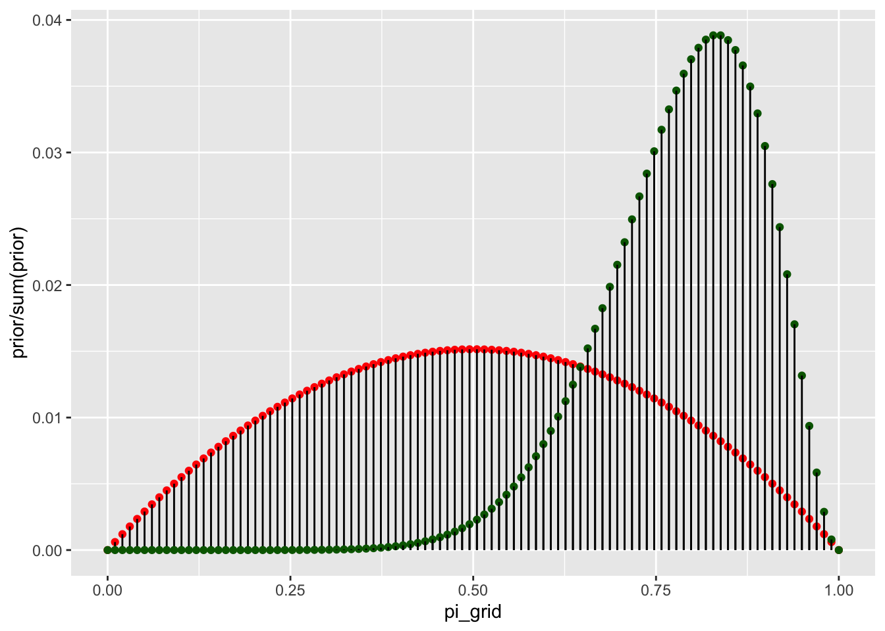

library(tidyverse)
library(stats2data)
library(rstan)
library(janitor)
library(bayesplot)
library(bayesrules)In addition to usual packages, tidyverse (Wickham et al. (2019)), stats2data (Sadigov (2022)), janitor (Firke (2021)), bayesrules (Dogucu, Johnson, and Ott (2021)) and bayesplot (Gabry and Mahr (2022)), we also use rstan (2022) in this chapter.
Libraries
Chapter 6
Grid Approximation
Take beta prior
\[ \pi \sim Beta(2,2) \]
and binomial data model
\[ Y|\pi \sim Binomial(10, \pi) \]
Observe evidence/data of 9 successes out of 10 trials. Then we know the posterior will
\[ \pi \sim Beta(2+9,2+1) = Beta(11, 3) \]
Now we approximate this posterior using the following steps.
Define a discrete grid of possible values.
Evaluate the prior pdf and likelihood function at each grid value.
Obtain a discrete approximation of the posterior pdf by:
calculating the product of prior and likelihood at each grid value;
normalizing the products so that they sum to 1 across all grid values
Randomly sample grid values with respect to their corresponding normalized posterior probabilities.
First we do this for only few possible points:
\[ \pi \in \{0, 0.2, 0.4, 0.8, 1 \} \]
grid_data <-
tibble(pi_grid = seq(from = 0, to = 1, length = 6)) %>% #step1
mutate(prior = dbeta(pi_grid, 2, 2),
likelihood = dbinom(9, 10, pi_grid)) %>% #step2
mutate(unnormalized = likelihood * prior,
posterior = unnormalized / sum(unnormalized)) #step3
grid_data %>%
round(2)# A tibble: 6 × 5
pi_grid prior likelihood unnormalized posterior
<dbl> <dbl> <dbl> <dbl> <dbl>
1 0 0 0 0 0
2 0.2 0.96 0 0 0
3 0.4 1.44 0 0 0.01
4 0.6 1.44 0.04 0.06 0.18
5 0.8 0.96 0.27 0.26 0.81
6 1 0 0 0 0 grid_data %>%
ggplot(aes(x = pi_grid)) +
geom_point(aes(y = prior/sum(prior), size = 2), color = 'red') +
geom_segment(aes(x = pi_grid, xend = pi_grid, y = 0, yend = prior/sum(prior))) +
geom_point(aes(y = posterior, size = 2), color='darkgreen') +
geom_segment(aes(x = pi_grid, xend = pi_grid, y = 0, yend = posterior)) # step4: sample from the discretized posterior
set.seed(84735)
post_sample <-
grid_data %>%
select(pi_grid, posterior) %>%
sample_n(size = 10000,
weight = posterior,
replace = TRUE) %>%
select(pi_grid)
post_sample# A tibble: 10,000 × 1
pi_grid
<dbl>
1 0.8
2 0.8
3 0.8
4 0.6
5 0.8
6 0.8
7 0.8
8 0.8
9 0.8
10 0.8
# … with 9,990 more rowspost_sample %>%
count(pi_grid) %>%
mutate(perc = n/sum(n))# A tibble: 3 × 3
pi_grid n perc
<dbl> <int> <dbl>
1 0.4 69 0.0069
2 0.6 1885 0.188
3 0.8 8046 0.805 grid_data %>%
round(2)# A tibble: 6 × 5
pi_grid prior likelihood unnormalized posterior
<dbl> <dbl> <dbl> <dbl> <dbl>
1 0 0 0 0 0
2 0.2 0.96 0 0 0
3 0.4 1.44 0 0 0.01
4 0.6 1.44 0.04 0.06 0.18
5 0.8 0.96 0.27 0.26 0.81
6 1 0 0 0 0 # Histogram of the grid simulation with posterior pdf
post_sample %>%
ggplot(aes(x = pi_grid)) +
geom_histogram(aes(y = ..density..), color = "white", fill = "darkgreen") +
geom_density(linewidth = 1, color = 'red') +
stat_function(fun = dbeta, args = list(11, 3), color = 'blue', linewidth = 1) +
lims(x = c(0, 1))
Lets do it again for 100 values.
grid_data <-
tibble(pi_grid = seq(from = 0, to = 1, length = 100)) %>% #step1
mutate(prior = dbeta(pi_grid, 2, 2),
likelihood = dbinom(9, 10, pi_grid)) %>% #step2
mutate(unnormalized = likelihood * prior,
posterior = unnormalized / sum(unnormalized)) #step3
grid_data %>%
round(2)# A tibble: 100 × 5
pi_grid prior likelihood unnormalized posterior
<dbl> <dbl> <dbl> <dbl> <dbl>
1 0 0 0 0 0
2 0.01 0.06 0 0 0
3 0.02 0.12 0 0 0
4 0.03 0.18 0 0 0
5 0.04 0.23 0 0 0
6 0.05 0.29 0 0 0
7 0.06 0.34 0 0 0
8 0.07 0.39 0 0 0
9 0.08 0.45 0 0 0
10 0.09 0.5 0 0 0
# … with 90 more rowsgrid_data %>%
ggplot(aes(x = pi_grid)) +
geom_point(aes(y = prior/sum(prior)), color = 'red') +
geom_segment(aes(x = pi_grid, xend = pi_grid, y = 0, yend = prior/sum(prior))) +
geom_point(aes(y = posterior), color='darkgreen') +
geom_segment(aes(x = pi_grid, xend = pi_grid, y = 0, yend = posterior)) 
# step4: sample from the discretized posterior
set.seed(84735)
post_sample <-
grid_data %>%
select(pi_grid, posterior) %>%
sample_n(size = 10000,
weight = posterior,
replace = TRUE) %>%
select(pi_grid)
post_sample %>%
ggplot(aes(pi_grid)) +
geom_density()
# Histogram of the grid simulation with posterior pdf
post_sample %>%
ggplot(aes(x = pi_grid)) +
geom_histogram(aes(y = ..density..), color = "white", fill = "darkgreen") +
geom_density(linewidth = 1, color = 'red') +
stat_function(fun = dbeta, args = list(11, 3), color = 'blue', linewidth = 1) +
lims(x = c(0, 1))Gamma-Poisson example
Take Gamma prior
\[ \lambda \sim Gamma(3,1) \]
and Poisson data model
\[ Y|\lambda \sim Poisson(\lambda) \]
Observe evidence/data of \(Y_1 = 2, Y_2 = 8\). Then we know the posterior will
\[ \lambda | \{Y_1, Y_2\} \sim Gamma(3 + Y_1 + Y_2, 1 + 2) = Gamma(13, 3) \]
grid_data <-
tibble(lambda_grid = seq(from = 0, to = 15, length = 100)) %>% #step1
mutate(prior = dgamma(lambda_grid, 3, 1),
likelihood = dpois(2, lambda_grid)*dpois(8, lambda_grid)) %>% #step2
mutate(unnormalized = likelihood * prior,
posterior = unnormalized / sum(unnormalized)) #step3
grid_data %>%
round(2)# A tibble: 100 × 5
lambda_grid prior likelihood unnormalized posterior
<dbl> <dbl> <dbl> <dbl> <dbl>
1 0 0 0 0 0
2 0.15 0.01 0 0 0
3 0.3 0.03 0 0 0
4 0.45 0.07 0 0 0
5 0.61 0.1 0 0 0
6 0.76 0.13 0 0 0
7 0.91 0.17 0 0 0
8 1.06 0.19 0 0 0
9 1.21 0.22 0 0 0
10 1.36 0.24 0 0 0
# … with 90 more rowsgrid_data %>%
ggplot(aes(x = lambda_grid)) +
geom_point(aes(y = prior/sum(prior)), color = 'red') +
geom_segment(aes(x = lambda_grid, xend = lambda_grid, y = 0, yend = prior/sum(prior))) +
geom_point(aes(y = posterior), color='darkgreen') +
geom_segment(aes(x = lambda_grid, xend = lambda_grid, y = 0, yend = posterior)) +
ylab('') +
xlab('lambda')# step4: sample from the discretized posterior
set.seed(84735)
post_sample <-
grid_data %>%
select(lambda_grid, posterior) %>%
sample_n(size = 10000,
weight = posterior,
replace = TRUE) %>%
select(lambda_grid)
post_sample %>%
ggplot(aes(lambda_grid)) +
geom_density()# Histogram of the grid simulation with posterior pdf
post_sample %>%
ggplot(aes(x = lambda_grid)) +
geom_histogram(aes(y = ..density..), color = "white", fill = "darkgreen") +
geom_density(linewidth = 1, color = 'red') +
stat_function(fun = dgamma, args = list(13, 3), color = 'blue', linewidth = 1) +
lims(x = c(0, 15))
Markov Chain Monte Carlo (MCMC)
# STEP 1: DEFINE the model
bb_model <- "
data {
int<lower = 0, upper = 10> Y;
}
parameters {
real<lower = 0, upper = 1> pi;
}
model {
Y ~ binomial(10, pi);
pi ~ beta(2, 2);
}
"
# STEP 2: SIMULATE the posterior
bb_sim <- stan(model_code = bb_model,
data = list(Y = 9),
chains = 4,
iter = 5000*2,
seed = 84735)
SAMPLING FOR MODEL 'anon_model' NOW (CHAIN 1).
Chain 1:
Chain 1: Gradient evaluation took 2e-05 seconds
Chain 1: 1000 transitions using 10 leapfrog steps per transition would take 0.2 seconds.
Chain 1: Adjust your expectations accordingly!
Chain 1:
Chain 1:
Chain 1: Iteration: 1 / 10000 [ 0%] (Warmup)
Chain 1: Iteration: 1000 / 10000 [ 10%] (Warmup)
Chain 1: Iteration: 2000 / 10000 [ 20%] (Warmup)
Chain 1: Iteration: 3000 / 10000 [ 30%] (Warmup)
Chain 1: Iteration: 4000 / 10000 [ 40%] (Warmup)
Chain 1: Iteration: 5000 / 10000 [ 50%] (Warmup)
Chain 1: Iteration: 5001 / 10000 [ 50%] (Sampling)
Chain 1: Iteration: 6000 / 10000 [ 60%] (Sampling)
Chain 1: Iteration: 7000 / 10000 [ 70%] (Sampling)
Chain 1: Iteration: 8000 / 10000 [ 80%] (Sampling)
Chain 1: Iteration: 9000 / 10000 [ 90%] (Sampling)
Chain 1: Iteration: 10000 / 10000 [100%] (Sampling)
Chain 1:
Chain 1: Elapsed Time: 0.034 seconds (Warm-up)
Chain 1: 0.035 seconds (Sampling)
Chain 1: 0.069 seconds (Total)
Chain 1:
SAMPLING FOR MODEL 'anon_model' NOW (CHAIN 2).
Chain 2:
Chain 2: Gradient evaluation took 1e-06 seconds
Chain 2: 1000 transitions using 10 leapfrog steps per transition would take 0.01 seconds.
Chain 2: Adjust your expectations accordingly!
Chain 2:
Chain 2:
Chain 2: Iteration: 1 / 10000 [ 0%] (Warmup)
Chain 2: Iteration: 1000 / 10000 [ 10%] (Warmup)
Chain 2: Iteration: 2000 / 10000 [ 20%] (Warmup)
Chain 2: Iteration: 3000 / 10000 [ 30%] (Warmup)
Chain 2: Iteration: 4000 / 10000 [ 40%] (Warmup)
Chain 2: Iteration: 5000 / 10000 [ 50%] (Warmup)
Chain 2: Iteration: 5001 / 10000 [ 50%] (Sampling)
Chain 2: Iteration: 6000 / 10000 [ 60%] (Sampling)
Chain 2: Iteration: 7000 / 10000 [ 70%] (Sampling)
Chain 2: Iteration: 8000 / 10000 [ 80%] (Sampling)
Chain 2: Iteration: 9000 / 10000 [ 90%] (Sampling)
Chain 2: Iteration: 10000 / 10000 [100%] (Sampling)
Chain 2:
Chain 2: Elapsed Time: 0.034 seconds (Warm-up)
Chain 2: 0.034 seconds (Sampling)
Chain 2: 0.068 seconds (Total)
Chain 2:
SAMPLING FOR MODEL 'anon_model' NOW (CHAIN 3).
Chain 3:
Chain 3: Gradient evaluation took 1e-06 seconds
Chain 3: 1000 transitions using 10 leapfrog steps per transition would take 0.01 seconds.
Chain 3: Adjust your expectations accordingly!
Chain 3:
Chain 3:
Chain 3: Iteration: 1 / 10000 [ 0%] (Warmup)
Chain 3: Iteration: 1000 / 10000 [ 10%] (Warmup)
Chain 3: Iteration: 2000 / 10000 [ 20%] (Warmup)
Chain 3: Iteration: 3000 / 10000 [ 30%] (Warmup)
Chain 3: Iteration: 4000 / 10000 [ 40%] (Warmup)
Chain 3: Iteration: 5000 / 10000 [ 50%] (Warmup)
Chain 3: Iteration: 5001 / 10000 [ 50%] (Sampling)
Chain 3: Iteration: 6000 / 10000 [ 60%] (Sampling)
Chain 3: Iteration: 7000 / 10000 [ 70%] (Sampling)
Chain 3: Iteration: 8000 / 10000 [ 80%] (Sampling)
Chain 3: Iteration: 9000 / 10000 [ 90%] (Sampling)
Chain 3: Iteration: 10000 / 10000 [100%] (Sampling)
Chain 3:
Chain 3: Elapsed Time: 0.034 seconds (Warm-up)
Chain 3: 0.034 seconds (Sampling)
Chain 3: 0.068 seconds (Total)
Chain 3:
SAMPLING FOR MODEL 'anon_model' NOW (CHAIN 4).
Chain 4:
Chain 4: Gradient evaluation took 2e-06 seconds
Chain 4: 1000 transitions using 10 leapfrog steps per transition would take 0.02 seconds.
Chain 4: Adjust your expectations accordingly!
Chain 4:
Chain 4:
Chain 4: Iteration: 1 / 10000 [ 0%] (Warmup)
Chain 4: Iteration: 1000 / 10000 [ 10%] (Warmup)
Chain 4: Iteration: 2000 / 10000 [ 20%] (Warmup)
Chain 4: Iteration: 3000 / 10000 [ 30%] (Warmup)
Chain 4: Iteration: 4000 / 10000 [ 40%] (Warmup)
Chain 4: Iteration: 5000 / 10000 [ 50%] (Warmup)
Chain 4: Iteration: 5001 / 10000 [ 50%] (Sampling)
Chain 4: Iteration: 6000 / 10000 [ 60%] (Sampling)
Chain 4: Iteration: 7000 / 10000 [ 70%] (Sampling)
Chain 4: Iteration: 8000 / 10000 [ 80%] (Sampling)
Chain 4: Iteration: 9000 / 10000 [ 90%] (Sampling)
Chain 4: Iteration: 10000 / 10000 [100%] (Sampling)
Chain 4:
Chain 4: Elapsed Time: 0.034 seconds (Warm-up)
Chain 4: 0.037 seconds (Sampling)
Chain 4: 0.071 seconds (Total)
Chain 4: Extract values from rstanfit object.
as.array(bb_sim, pars = "pi") %>%
head(4), , parameters = pi
chains
iterations chain:1 chain:2 chain:3 chain:4
[1,] 0.8509792 0.7854911 0.8150912 0.8256014
[2,] 0.8326781 0.7854911 0.7707460 0.7494223
[3,] 0.9180909 0.9052724 0.6695176 0.7539612
[4,] 0.8399942 0.9011347 0.8544073 0.8206070Trace plot (chain tracing through sample space of the posterior distribution)
mcmc_trace(bb_sim,
pars = "pi",
size = 0.1)mcmc_trace(bb_sim)mcmc_trace(bb_sim, pars = "pi")Density
# Histogram of the Markov chain values
mcmc_hist(bb_sim, pars = "pi") +
yaxis_text(TRUE) +
ylab("count")# Density plot of the Markov chain values
mcmc_dens(bb_sim, pars = "pi") +
yaxis_text(TRUE) +
ylab("density")Gamma-Poisson example
Assume
\[ Y \sim Poisson(\lambda) \]
where
\[ \lambda \sim Gamma(3, 1). \]
# STEP 1: DEFINE the model
gp_model <- "
data {
int<lower = 0> Y[2];
}
parameters {
real<lower = 0> lambda;
}
model {
Y ~ poisson(lambda);
lambda ~ gamma(3, 1);
}
"
# STEP 2: SIMULATE the posterior
gp_sim <- stan(model_code = gp_model,
data = list(Y = c(2,8)),
chains = 4,
iter = 5000*2,
seed = 84735)
SAMPLING FOR MODEL 'anon_model' NOW (CHAIN 1).
Chain 1:
Chain 1: Gradient evaluation took 1.2e-05 seconds
Chain 1: 1000 transitions using 10 leapfrog steps per transition would take 0.12 seconds.
Chain 1: Adjust your expectations accordingly!
Chain 1:
Chain 1:
Chain 1: Iteration: 1 / 10000 [ 0%] (Warmup)
Chain 1: Iteration: 1000 / 10000 [ 10%] (Warmup)
Chain 1: Iteration: 2000 / 10000 [ 20%] (Warmup)
Chain 1: Iteration: 3000 / 10000 [ 30%] (Warmup)
Chain 1: Iteration: 4000 / 10000 [ 40%] (Warmup)
Chain 1: Iteration: 5000 / 10000 [ 50%] (Warmup)
Chain 1: Iteration: 5001 / 10000 [ 50%] (Sampling)
Chain 1: Iteration: 6000 / 10000 [ 60%] (Sampling)
Chain 1: Iteration: 7000 / 10000 [ 70%] (Sampling)
Chain 1: Iteration: 8000 / 10000 [ 80%] (Sampling)
Chain 1: Iteration: 9000 / 10000 [ 90%] (Sampling)
Chain 1: Iteration: 10000 / 10000 [100%] (Sampling)
Chain 1:
Chain 1: Elapsed Time: 0.03 seconds (Warm-up)
Chain 1: 0.029 seconds (Sampling)
Chain 1: 0.059 seconds (Total)
Chain 1:
SAMPLING FOR MODEL 'anon_model' NOW (CHAIN 2).
Chain 2:
Chain 2: Gradient evaluation took 1e-06 seconds
Chain 2: 1000 transitions using 10 leapfrog steps per transition would take 0.01 seconds.
Chain 2: Adjust your expectations accordingly!
Chain 2:
Chain 2:
Chain 2: Iteration: 1 / 10000 [ 0%] (Warmup)
Chain 2: Iteration: 1000 / 10000 [ 10%] (Warmup)
Chain 2: Iteration: 2000 / 10000 [ 20%] (Warmup)
Chain 2: Iteration: 3000 / 10000 [ 30%] (Warmup)
Chain 2: Iteration: 4000 / 10000 [ 40%] (Warmup)
Chain 2: Iteration: 5000 / 10000 [ 50%] (Warmup)
Chain 2: Iteration: 5001 / 10000 [ 50%] (Sampling)
Chain 2: Iteration: 6000 / 10000 [ 60%] (Sampling)
Chain 2: Iteration: 7000 / 10000 [ 70%] (Sampling)
Chain 2: Iteration: 8000 / 10000 [ 80%] (Sampling)
Chain 2: Iteration: 9000 / 10000 [ 90%] (Sampling)
Chain 2: Iteration: 10000 / 10000 [100%] (Sampling)
Chain 2:
Chain 2: Elapsed Time: 0.031 seconds (Warm-up)
Chain 2: 0.03 seconds (Sampling)
Chain 2: 0.061 seconds (Total)
Chain 2:
SAMPLING FOR MODEL 'anon_model' NOW (CHAIN 3).
Chain 3:
Chain 3: Gradient evaluation took 1e-06 seconds
Chain 3: 1000 transitions using 10 leapfrog steps per transition would take 0.01 seconds.
Chain 3: Adjust your expectations accordingly!
Chain 3:
Chain 3:
Chain 3: Iteration: 1 / 10000 [ 0%] (Warmup)
Chain 3: Iteration: 1000 / 10000 [ 10%] (Warmup)
Chain 3: Iteration: 2000 / 10000 [ 20%] (Warmup)
Chain 3: Iteration: 3000 / 10000 [ 30%] (Warmup)
Chain 3: Iteration: 4000 / 10000 [ 40%] (Warmup)
Chain 3: Iteration: 5000 / 10000 [ 50%] (Warmup)
Chain 3: Iteration: 5001 / 10000 [ 50%] (Sampling)
Chain 3: Iteration: 6000 / 10000 [ 60%] (Sampling)
Chain 3: Iteration: 7000 / 10000 [ 70%] (Sampling)
Chain 3: Iteration: 8000 / 10000 [ 80%] (Sampling)
Chain 3: Iteration: 9000 / 10000 [ 90%] (Sampling)
Chain 3: Iteration: 10000 / 10000 [100%] (Sampling)
Chain 3:
Chain 3: Elapsed Time: 0.029 seconds (Warm-up)
Chain 3: 0.03 seconds (Sampling)
Chain 3: 0.059 seconds (Total)
Chain 3:
SAMPLING FOR MODEL 'anon_model' NOW (CHAIN 4).
Chain 4:
Chain 4: Gradient evaluation took 1e-06 seconds
Chain 4: 1000 transitions using 10 leapfrog steps per transition would take 0.01 seconds.
Chain 4: Adjust your expectations accordingly!
Chain 4:
Chain 4:
Chain 4: Iteration: 1 / 10000 [ 0%] (Warmup)
Chain 4: Iteration: 1000 / 10000 [ 10%] (Warmup)
Chain 4: Iteration: 2000 / 10000 [ 20%] (Warmup)
Chain 4: Iteration: 3000 / 10000 [ 30%] (Warmup)
Chain 4: Iteration: 4000 / 10000 [ 40%] (Warmup)
Chain 4: Iteration: 5000 / 10000 [ 50%] (Warmup)
Chain 4: Iteration: 5001 / 10000 [ 50%] (Sampling)
Chain 4: Iteration: 6000 / 10000 [ 60%] (Sampling)
Chain 4: Iteration: 7000 / 10000 [ 70%] (Sampling)
Chain 4: Iteration: 8000 / 10000 [ 80%] (Sampling)
Chain 4: Iteration: 9000 / 10000 [ 90%] (Sampling)
Chain 4: Iteration: 10000 / 10000 [100%] (Sampling)
Chain 4:
Chain 4: Elapsed Time: 0.029 seconds (Warm-up)
Chain 4: 0.029 seconds (Sampling)
Chain 4: 0.058 seconds (Total)
Chain 4: Trace.
# Trace plots of the 4 Markov chains
mcmc_trace(gp_sim,
pars = "lambda",
size = 0.1)# Histogram of the Markov chain values
mcmc_hist(gp_sim, pars = "lambda") +
yaxis_text(TRUE) +
ylab("count")# Density plot of the Markov chain values
mcmc_dens(gp_sim, pars = "lambda") +
yaxis_text(TRUE) +
ylab("density")Example of instability in short runs
# STEP 2: SIMULATE the posterior
bb_sim_short <- stan(model_code = bb_model,
data = list(Y = 9),
chains = 4,
iter = 50*2,
seed = 84735)
SAMPLING FOR MODEL 'anon_model' NOW (CHAIN 1).
Chain 1:
Chain 1: Gradient evaluation took 1.6e-05 seconds
Chain 1: 1000 transitions using 10 leapfrog steps per transition would take 0.16 seconds.
Chain 1: Adjust your expectations accordingly!
Chain 1:
Chain 1:
Chain 1: WARNING: There aren't enough warmup iterations to fit the
Chain 1: three stages of adaptation as currently configured.
Chain 1: Reducing each adaptation stage to 15%/75%/10% of
Chain 1: the given number of warmup iterations:
Chain 1: init_buffer = 7
Chain 1: adapt_window = 38
Chain 1: term_buffer = 5
Chain 1:
Chain 1: Iteration: 1 / 100 [ 1%] (Warmup)
Chain 1: Iteration: 10 / 100 [ 10%] (Warmup)
Chain 1: Iteration: 20 / 100 [ 20%] (Warmup)
Chain 1: Iteration: 30 / 100 [ 30%] (Warmup)
Chain 1: Iteration: 40 / 100 [ 40%] (Warmup)
Chain 1: Iteration: 50 / 100 [ 50%] (Warmup)
Chain 1: Iteration: 51 / 100 [ 51%] (Sampling)
Chain 1: Iteration: 60 / 100 [ 60%] (Sampling)
Chain 1: Iteration: 70 / 100 [ 70%] (Sampling)
Chain 1: Iteration: 80 / 100 [ 80%] (Sampling)
Chain 1: Iteration: 90 / 100 [ 90%] (Sampling)
Chain 1: Iteration: 100 / 100 [100%] (Sampling)
Chain 1:
Chain 1: Elapsed Time: 0 seconds (Warm-up)
Chain 1: 0 seconds (Sampling)
Chain 1: 0 seconds (Total)
Chain 1:
SAMPLING FOR MODEL 'anon_model' NOW (CHAIN 2).
Chain 2:
Chain 2: Gradient evaluation took 1e-06 seconds
Chain 2: 1000 transitions using 10 leapfrog steps per transition would take 0.01 seconds.
Chain 2: Adjust your expectations accordingly!
Chain 2:
Chain 2:
Chain 2: WARNING: There aren't enough warmup iterations to fit the
Chain 2: three stages of adaptation as currently configured.
Chain 2: Reducing each adaptation stage to 15%/75%/10% of
Chain 2: the given number of warmup iterations:
Chain 2: init_buffer = 7
Chain 2: adapt_window = 38
Chain 2: term_buffer = 5
Chain 2:
Chain 2: Iteration: 1 / 100 [ 1%] (Warmup)
Chain 2: Iteration: 10 / 100 [ 10%] (Warmup)
Chain 2: Iteration: 20 / 100 [ 20%] (Warmup)
Chain 2: Iteration: 30 / 100 [ 30%] (Warmup)
Chain 2: Iteration: 40 / 100 [ 40%] (Warmup)
Chain 2: Iteration: 50 / 100 [ 50%] (Warmup)
Chain 2: Iteration: 51 / 100 [ 51%] (Sampling)
Chain 2: Iteration: 60 / 100 [ 60%] (Sampling)
Chain 2: Iteration: 70 / 100 [ 70%] (Sampling)
Chain 2: Iteration: 80 / 100 [ 80%] (Sampling)
Chain 2: Iteration: 90 / 100 [ 90%] (Sampling)
Chain 2: Iteration: 100 / 100 [100%] (Sampling)
Chain 2:
Chain 2: Elapsed Time: 0 seconds (Warm-up)
Chain 2: 0 seconds (Sampling)
Chain 2: 0 seconds (Total)
Chain 2:
SAMPLING FOR MODEL 'anon_model' NOW (CHAIN 3).
Chain 3:
Chain 3: Gradient evaluation took 1e-06 seconds
Chain 3: 1000 transitions using 10 leapfrog steps per transition would take 0.01 seconds.
Chain 3: Adjust your expectations accordingly!
Chain 3:
Chain 3:
Chain 3: WARNING: There aren't enough warmup iterations to fit the
Chain 3: three stages of adaptation as currently configured.
Chain 3: Reducing each adaptation stage to 15%/75%/10% of
Chain 3: the given number of warmup iterations:
Chain 3: init_buffer = 7
Chain 3: adapt_window = 38
Chain 3: term_buffer = 5
Chain 3:
Chain 3: Iteration: 1 / 100 [ 1%] (Warmup)
Chain 3: Iteration: 10 / 100 [ 10%] (Warmup)
Chain 3: Iteration: 20 / 100 [ 20%] (Warmup)
Chain 3: Iteration: 30 / 100 [ 30%] (Warmup)
Chain 3: Iteration: 40 / 100 [ 40%] (Warmup)
Chain 3: Iteration: 50 / 100 [ 50%] (Warmup)
Chain 3: Iteration: 51 / 100 [ 51%] (Sampling)
Chain 3: Iteration: 60 / 100 [ 60%] (Sampling)
Chain 3: Iteration: 70 / 100 [ 70%] (Sampling)
Chain 3: Iteration: 80 / 100 [ 80%] (Sampling)
Chain 3: Iteration: 90 / 100 [ 90%] (Sampling)
Chain 3: Iteration: 100 / 100 [100%] (Sampling)
Chain 3:
Chain 3: Elapsed Time: 0 seconds (Warm-up)
Chain 3: 0 seconds (Sampling)
Chain 3: 0 seconds (Total)
Chain 3:
SAMPLING FOR MODEL 'anon_model' NOW (CHAIN 4).
Chain 4:
Chain 4: Gradient evaluation took 1e-06 seconds
Chain 4: 1000 transitions using 10 leapfrog steps per transition would take 0.01 seconds.
Chain 4: Adjust your expectations accordingly!
Chain 4:
Chain 4:
Chain 4: WARNING: There aren't enough warmup iterations to fit the
Chain 4: three stages of adaptation as currently configured.
Chain 4: Reducing each adaptation stage to 15%/75%/10% of
Chain 4: the given number of warmup iterations:
Chain 4: init_buffer = 7
Chain 4: adapt_window = 38
Chain 4: term_buffer = 5
Chain 4:
Chain 4: Iteration: 1 / 100 [ 1%] (Warmup)
Chain 4: Iteration: 10 / 100 [ 10%] (Warmup)
Chain 4: Iteration: 20 / 100 [ 20%] (Warmup)
Chain 4: Iteration: 30 / 100 [ 30%] (Warmup)
Chain 4: Iteration: 40 / 100 [ 40%] (Warmup)
Chain 4: Iteration: 50 / 100 [ 50%] (Warmup)
Chain 4: Iteration: 51 / 100 [ 51%] (Sampling)
Chain 4: Iteration: 60 / 100 [ 60%] (Sampling)
Chain 4: Iteration: 70 / 100 [ 70%] (Sampling)
Chain 4: Iteration: 80 / 100 [ 80%] (Sampling)
Chain 4: Iteration: 90 / 100 [ 90%] (Sampling)
Chain 4: Iteration: 100 / 100 [100%] (Sampling)
Chain 4:
Chain 4: Elapsed Time: 0 seconds (Warm-up)
Chain 4: 0 seconds (Sampling)
Chain 4: 0 seconds (Total)
Chain 4: # Trace plots of short chains
mcmc_trace(bb_sim_short, pars = "pi")# Density plots of individual short chains
mcmc_dens_overlay(bb_sim_short, pars = "pi")Effective sample size
neff_ratio(bb_sim, pars = c("pi"))[1] 0.3503248neff_ratio(bb_sim, pars = c("pi"))*20000[1] 7006.497Autocorrelation
mcmc_trace(bb_sim, pars = "pi")
mcmc_acf(bb_sim, pars = "pi")Thinning the time series
# Simulate a thinned MCMC sample
thinned_sim <- stan(model_code = bb_model,
data = list(Y = 9),
chains = 4,
iter = 5000*2,
seed = 84735,
thin = 10)
SAMPLING FOR MODEL 'anon_model' NOW (CHAIN 1).
Chain 1:
Chain 1: Gradient evaluation took 1.5e-05 seconds
Chain 1: 1000 transitions using 10 leapfrog steps per transition would take 0.15 seconds.
Chain 1: Adjust your expectations accordingly!
Chain 1:
Chain 1:
Chain 1: Iteration: 1 / 10000 [ 0%] (Warmup)
Chain 1: Iteration: 1000 / 10000 [ 10%] (Warmup)
Chain 1: Iteration: 2000 / 10000 [ 20%] (Warmup)
Chain 1: Iteration: 3000 / 10000 [ 30%] (Warmup)
Chain 1: Iteration: 4000 / 10000 [ 40%] (Warmup)
Chain 1: Iteration: 5000 / 10000 [ 50%] (Warmup)
Chain 1: Iteration: 5001 / 10000 [ 50%] (Sampling)
Chain 1: Iteration: 6000 / 10000 [ 60%] (Sampling)
Chain 1: Iteration: 7000 / 10000 [ 70%] (Sampling)
Chain 1: Iteration: 8000 / 10000 [ 80%] (Sampling)
Chain 1: Iteration: 9000 / 10000 [ 90%] (Sampling)
Chain 1: Iteration: 10000 / 10000 [100%] (Sampling)
Chain 1:
Chain 1: Elapsed Time: 0.029 seconds (Warm-up)
Chain 1: 0.03 seconds (Sampling)
Chain 1: 0.059 seconds (Total)
Chain 1:
SAMPLING FOR MODEL 'anon_model' NOW (CHAIN 2).
Chain 2:
Chain 2: Gradient evaluation took 1e-06 seconds
Chain 2: 1000 transitions using 10 leapfrog steps per transition would take 0.01 seconds.
Chain 2: Adjust your expectations accordingly!
Chain 2:
Chain 2:
Chain 2: Iteration: 1 / 10000 [ 0%] (Warmup)
Chain 2: Iteration: 1000 / 10000 [ 10%] (Warmup)
Chain 2: Iteration: 2000 / 10000 [ 20%] (Warmup)
Chain 2: Iteration: 3000 / 10000 [ 30%] (Warmup)
Chain 2: Iteration: 4000 / 10000 [ 40%] (Warmup)
Chain 2: Iteration: 5000 / 10000 [ 50%] (Warmup)
Chain 2: Iteration: 5001 / 10000 [ 50%] (Sampling)
Chain 2: Iteration: 6000 / 10000 [ 60%] (Sampling)
Chain 2: Iteration: 7000 / 10000 [ 70%] (Sampling)
Chain 2: Iteration: 8000 / 10000 [ 80%] (Sampling)
Chain 2: Iteration: 9000 / 10000 [ 90%] (Sampling)
Chain 2: Iteration: 10000 / 10000 [100%] (Sampling)
Chain 2:
Chain 2: Elapsed Time: 0.029 seconds (Warm-up)
Chain 2: 0.028 seconds (Sampling)
Chain 2: 0.057 seconds (Total)
Chain 2:
SAMPLING FOR MODEL 'anon_model' NOW (CHAIN 3).
Chain 3:
Chain 3: Gradient evaluation took 3e-06 seconds
Chain 3: 1000 transitions using 10 leapfrog steps per transition would take 0.03 seconds.
Chain 3: Adjust your expectations accordingly!
Chain 3:
Chain 3:
Chain 3: Iteration: 1 / 10000 [ 0%] (Warmup)
Chain 3: Iteration: 1000 / 10000 [ 10%] (Warmup)
Chain 3: Iteration: 2000 / 10000 [ 20%] (Warmup)
Chain 3: Iteration: 3000 / 10000 [ 30%] (Warmup)
Chain 3: Iteration: 4000 / 10000 [ 40%] (Warmup)
Chain 3: Iteration: 5000 / 10000 [ 50%] (Warmup)
Chain 3: Iteration: 5001 / 10000 [ 50%] (Sampling)
Chain 3: Iteration: 6000 / 10000 [ 60%] (Sampling)
Chain 3: Iteration: 7000 / 10000 [ 70%] (Sampling)
Chain 3: Iteration: 8000 / 10000 [ 80%] (Sampling)
Chain 3: Iteration: 9000 / 10000 [ 90%] (Sampling)
Chain 3: Iteration: 10000 / 10000 [100%] (Sampling)
Chain 3:
Chain 3: Elapsed Time: 0.029 seconds (Warm-up)
Chain 3: 0.028 seconds (Sampling)
Chain 3: 0.057 seconds (Total)
Chain 3:
SAMPLING FOR MODEL 'anon_model' NOW (CHAIN 4).
Chain 4:
Chain 4: Gradient evaluation took 2e-06 seconds
Chain 4: 1000 transitions using 10 leapfrog steps per transition would take 0.02 seconds.
Chain 4: Adjust your expectations accordingly!
Chain 4:
Chain 4:
Chain 4: Iteration: 1 / 10000 [ 0%] (Warmup)
Chain 4: Iteration: 1000 / 10000 [ 10%] (Warmup)
Chain 4: Iteration: 2000 / 10000 [ 20%] (Warmup)
Chain 4: Iteration: 3000 / 10000 [ 30%] (Warmup)
Chain 4: Iteration: 4000 / 10000 [ 40%] (Warmup)
Chain 4: Iteration: 5000 / 10000 [ 50%] (Warmup)
Chain 4: Iteration: 5001 / 10000 [ 50%] (Sampling)
Chain 4: Iteration: 6000 / 10000 [ 60%] (Sampling)
Chain 4: Iteration: 7000 / 10000 [ 70%] (Sampling)
Chain 4: Iteration: 8000 / 10000 [ 80%] (Sampling)
Chain 4: Iteration: 9000 / 10000 [ 90%] (Sampling)
Chain 4: Iteration: 10000 / 10000 [100%] (Sampling)
Chain 4:
Chain 4: Elapsed Time: 0.029 seconds (Warm-up)
Chain 4: 0.031 seconds (Sampling)
Chain 4: 0.06 seconds (Total)
Chain 4: # Check out the results
mcmc_trace(thinned_sim, pars = "pi")mcmc_acf(thinned_sim, pars = "pi")rstan and rstanarm
- Hamiltonian Monte Carlo Algorithm
- Advises against thinning
R-hat
rhat(bb_sim, pars = "pi")[1] 1.000647Chapter 7
Assume the following Normal-Normal model:
\[ Y|\mu \sim Normal(\mu, 0.75^2) \]
\[ \mu \sim Normal(0, 1^2) \]
We observe data:
\[ Y = 6.25 \]
Then our posterior is:
\[ \mu| Y = 6.25 \sim Normal(4, 0.6^2) \]
FIND THIS POSTERIOR THROUGH SIMULATION.
Just independent Monte Carlo simulation
set.seed(84375)
mc_tour <- tibble(mu = rnorm(5000,
mean = 4,
sd = 0.6))
mc_tour %>%
ggplot(aes(x = mu)) +
geom_histogram(aes(y = ..density..), color = "white", bins = 50) +
stat_function(fun = dnorm, args = list(4, 0.6), color = "blue")Metropolis
current <- 3
set.seed(8)
proposal <- runif(1,
min = current - 1,
max = current + 1)
proposal[1] 2.93259# prior * likelihood
proposal_plaus <- dnorm(proposal, 0, 1) * dnorm(6.25, proposal, 0.75)
proposal_plaus[1] 1.624909e-07current_plaus <- dnorm(current, 0, 1) * dnorm(6.25, current, 0.75)
current_plaus[1] 1.971928e-07proposal_plaus / current_plaus[1] 0.8240205alpha <- min(1, proposal_plaus / current_plaus)
alpha[1] 0.8240205next_stop <- sample(c(proposal, current),
size = 1,
prob = c(alpha, 1-alpha))
next_stop[1] 2.93259Automate
one_mh_iteration <- function(w, current){
# STEP 1: Propose the next chain location
proposal <- runif(1, min = current - w, max = current + w)
# STEP 2: Decide whether or not to go there
proposal_plaus <- dnorm(proposal, 0, 1) * dnorm(6.25, proposal, 0.75)
current_plaus <- dnorm(current, 0, 1) * dnorm(6.25, current, 0.75)
alpha <- min(1, proposal_plaus / current_plaus)
next_stop <- sample(c(proposal, current),
size = 1, prob = c(alpha, 1-alpha))
# Return the results
return(data.frame(proposal, alpha, next_stop))
}set.seed(8)
one_mh_iteration(w = 1, current = 3) proposal alpha next_stop
1 2.93259 0.8240205 2.93259set.seed(83)
one_mh_iteration(w = 1, current = 3) proposal alpha next_stop
1 2.017587 0.01708783 3set.seed(7)
one_mh_iteration(w = 1, current = 3) proposal alpha next_stop
1 3.977819 1 3.977819Next time: 7.3-7.8
References
Dogucu, Mine, Alicia Johnson, and Miles Ott. 2021. “Bayesrules: Datasets and Supplemental Functions from Bayes Rules! Book.” https://github.com/bayes-rules/bayesrules.
Firke, Sam. 2021. “Janitor: Simple Tools for Examining and Cleaning Dirty Data.” https://CRAN.R-project.org/package=janitor.
Gabry, Jonah, and Tristan Mahr. 2022. “Bayesplot: Plotting for Bayesian Models.” https://mc-stan.org/bayesplot/.
Sadigov, Tural. 2022. “Stats2data: Data Package for MATH 254, Statistical Modeling and Applications, at Hamilton College.” https://github.com/turalsadigov/stats2data.
Stan Development Team. 2022. “RStan: The r Interface to Stan.” https://mc-stan.org/.
Wickham, Hadley, Mara Averick, Jennifer Bryan, Winston Chang, Lucy D’Agostino McGowan, Romain François, Garrett Grolemund, et al. 2019. “Welcome to the Tidyverse” 4: 1686. https://doi.org/10.21105/joss.01686.